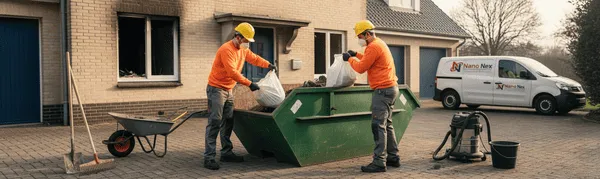

¿Qué hacer después de un incendio en casa?

Orden de prioridades urgente: 1) No entres hasta que los bomberos confirmen seguridad. 2) Corta luz y gas desde el cuadro general. 3) Haz fotos de TODA la vivienda antes de tocar nada (documenta para el seguro). 4) Avisa a tu aseguradora en máximo 7 días. 5) NUNCA limpies el hollín tú mismo: es tóxico y la limpieza casera lo incrusta. 6) Llama a profesionales certificados 24/7 para eliminar hollín con HEPA y ozono. Disponible gratuitamente.
Pasos tras un incendio
- Seguridad primero: No entre hasta que los bomberos confirmen que es seguro. Corte luz y gas desde el cuadro general.
- Avise al seguro en 7 días: Comunique el siniestro y anote el número de expediente: es fundamental para la indemnización.
- Fotografie todo: Haga fotos y vídeos de cada estancia y enser dañado antes de mover absolutamente nada.
- No limpie usted mismo: El hollín es graso; la limpieza casera incrusta daños y daña materiales irreversiblemente.
- Llame a especialistas: Una empresa de limpieza post incendio retira residuos, limpia el hollín y elimina el olor con ozono.
- Obtenga el informe: Solicite informe técnico con fotos de la empresa de limpieza para presentar al seguro.
Vaya por delante una cosa, que conviene decirla pronto y clara: que le haya entrado el fuego en casa no significa que lo haya perdido todo. Ni mucho menos. Da una impresión tremenda, el olor se le mete a uno en el alma y aquello parece el fin del mundo… pero la mayoría de las viviendas se recuperan. Eso sí, hay que hacer las cosas por orden y sin precipitarse.
Así que respire hondo, que vamos por partes.
Paso 1: Lo primero de todo - su seguridad
Aquí entramos nosotros, se lo digo sin disimular. Una empresa especializada acude, valora los daños, retira lo irrecuperable, limpia el hollín con técnica (aspiración HEPA, esponjas químicas, productos específicos) y —esto es clave— elimina el olor a humo con ozono, que no se va solo por mucho ambientador que eche. Si el olor es lo que más le agobia, lea cómo eliminar el olor a humo en casa.
Paso 2: Costos y recuperación - El precio final
Depende de los metros y de cómo haya quedado la cosa, pero le hemos puesto números reales en cuánto cuesta limpiar una casa tras un incendio en Madrid. Y recuerde: en la mayoría de los casos lo paga el seguro.
En resumen: seguridad, seguro, fotos y profesionales. Con esas cuatro patas, lo que hoy parece imposible, en unos días vuelve a oler a casa.
Paso 3: Las primeras 24 horas - Lo que de verdad importa
Le voy a ser franco: lo que haga o deje de hacer el primer día pesa más que todo lo que venga después. Y no porque haya que correr como un pollo sin cabeza, sino justo lo contrario. Las prisas mal dirigidas son las que estropean las cosas. Le resumo, en plata, en qué debe centrarse ese primer día:
- Las personas y los animales, que estén bien y lejos del humo. Lo demás espera.
- Los papeles importantes, si puede rescatarlos sin riesgo: DNI, escrituras, la documentación del coche.
- Las fotos, muchas fotos, antes de tocar absolutamente nada.
- La llamada al seguro, para abrir el parte y que empiece a correr el reloj a su favor.
Lo que NO debe hacer (aunque le pueda el impulso)
No empiece a fregar. No tire enseres "que ya no valen" sin fotografiarlos. No enchufe nada hasta que revisen la instalación. Y, sobre todo, no se quede a dormir entre humos pensando que "no es para tanto": el monóxido y las partículas en suspensión no se ven, pero ahí están.
Mire, lo resumo en una frase que les digo a todos: el primer día se documenta y se protege; ya habrá tiempo de limpiar. Las prisas por limpiar son las que cuestan dinero.
Preguntas frecuentes
¿Cuánto tiempo tengo para avisar al seguro tras un incendio?
Por lo general, tienes un plazo máximo de 7 días desde que ocurre el siniestro para comunicar a tu aseguradora. Cuanto antes lo hagas, más rápido se pone en marcha el peritaje y la valoración de daños. Se recomienda hacerlo en las primeras 24 horas para acelerar el proceso. Anota el número de expediente y mantén un registro de todas las comunicaciones con la aseguradora.
¿Puedo dormir en casa después de un incendio?
No es recomendable. Aunque el fuego se haya extinguido, el ambiente sigue contaminado con partículas de hollín y gases tóxicos (monóxido de carbono residual, partículas carcinógenas). Debes esperar a que: 1) Un electricista revise la instalación y declare segura, 2) Se verifique la estructura, 3) Se limpie el hollín profesionalmente con HEPA, 4) Se desodorice con ozono. Hasta entonces, busca alojamiento temporal. Tu salud no tiene precio.
¿Tengo que limpiar antes de que venga el perito?
No, nunca. Esto es crítico: ESPERA al perito antes de tocar nada. Documenta TODO con fotos y vídeos de alta calidad de cada habitación y cada objeto dañado. Si limpias, descartas enseres o realizas cualquier trabajo antes del peritaje, puedes perder parte sustancial de la indemnización. El perito necesita ver el estado real de los daños. Solo llama a profesionales para una evaluación inicial gratuita (sin limpiar). Después, una vez autorizado por el seguro, realiza la limpieza profesional.